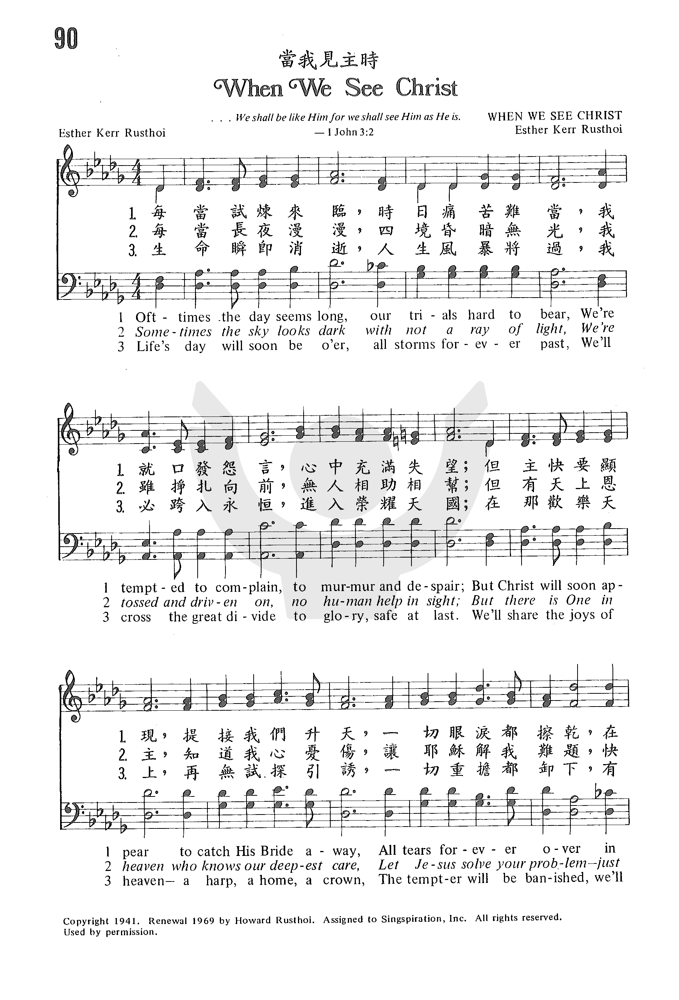
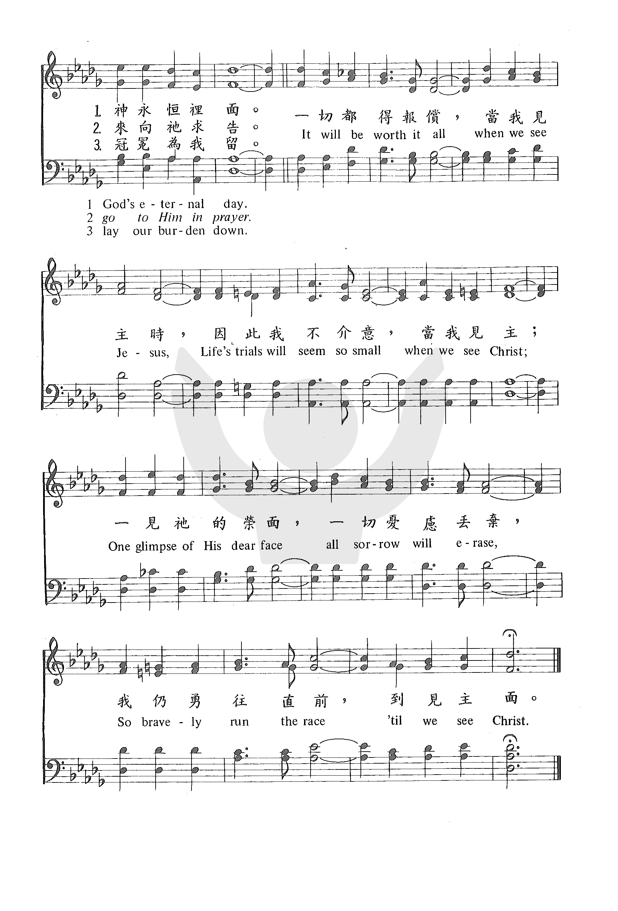

1274
When We See Christ
_Esther
Kerr Rusthoi
当我见主时
|
|
|
|
090 When We See Christ
Oft-Times the day seems long, our trials hard to bear,
We’re tempted to complain to murmur and despair;
But Christ will soon appear to catch His Bride away,
All tears forever over in God’s eternal day.
It will be worth it all when we see Jesus,
Life’s trial will seem so small when we see Christ;
One glimpse of His dear face all sorrow will erase,
So bravely run the race ’til we see Christ.
Sometimes the sky looks dark with not a ray of light,
We’re tossed and driven on, no human help in sight;
But there is One in heaven who knows our deepest care,
Let Jesus solve your problem – just go to Him in prayer.
It will be worth it all when we see Jesus,
Life’s trial will seem so small when we see Christ;
One glimpse of His dear face all sorrow will erase,
So bravely run the race ’til we see Christ.
Life’s day will soon be o’er, all storms forever past,
We’ll cross the great divide to glory, safe at last.
We’ll share the joys of heaven – a harp, a home, a crown,
The tempter will be banished, we’ll lay our burden down.
It will be worth it all when we see Jesus,
Life’s trial will seem so small when we see Christ;
One glimpse of His dear face all sorrow will erase,
So bravely run the race ’til we see Christ. |
090 當我見主時 When We See Christ
每當試煉來臨，時日痛苦難當，
我就口發怨言，心中充滿失望；
但主快要顯現，提接我們升天，
一切眼淚都擦乾，在神永�絑堶情C
一切都得報償，當我見主時，
因此我不介意，當我見主；
一見祂的榮面，一切憂慮丟棄，
我仍勇往直前，到見主面。
每當長夜漫漫，四境昏暗無光，
我雖掙扎向前，無人相助相幫；
但有天上恩主，知道我心憂傷，
讓耶穌解我難題，快來向祂求告。
一切都得報償，當我見主時，
因此我不介意，當我見主；
一見祂的榮面，一切憂慮丟棄，
我仍勇往直前，到見主面。
生命瞬即消逝，人生風暴將過，
我必跨入永�琚A進入榮耀天國；
在那歡樂天上，再無試探引誘，
一切重擔都卸下，有冠冕為我留。
一切都得報償，當我見主時，
因此我不介意，當我見主；
一見祂的榮面，一切憂慮丟棄，
我仍勇往直前，到見主面。
|
|
https://www.zanmeishige.com/tab/25412.html?songbook=1&index=90

 |
|
|
|
1274
When We See Christ
当我见主时
|
Short Name: |
Esther Kerr Rusthoi |
|
Full Name: |
Rusthoi, Esther Kerr, 1909-1962 |
|
Birth Year: |
1909 |
|
Death Year: |
1962 |
Tune Information
|
Title: |
[Oft times the day seems long, our trials hard to bear] |
|
Composer: |
Esther Kerr Rusthoi |
|
Meter: |
Irregular |
|
Incipit: |
13344 53114 43552 |
|
Key: |
C
Major |
|
Copyright: |
©
Copyright 1941, Renewed 1969 by New Spring (ASCAP) (admin. by
Brentwood-Benson Composer Publishing, Inc.). |
Words: Esther L. Kerr Rusthoi (b. Feb. 21, 1909; d. Apr. 8, 1962)
Music: Esther L. Kerr Rusthoi
Links:
Wordwise Hymns
The Cyber Hymnal (Esther Rusthoi)
Note: Esther Kerr was the sister of musical evangelist Phil Kerr. (Mr. Kerr also
wrote Music in Evangelism (Zondervan, 1962), a carefully researched collection
of stories about our hymns and gospel songs.) Esther married pastor and
evangelist Howard Rusthoi. An accomplished woman, she was an author, poet,
composer, singer, and an evangelist herself, and was an associate pastor at the
Pentecostal Angeles Temple, of Los Angeles.
She wrote a number of books and hymns (see the Cyber Hymnal link), but this fine
1941 song is her best known. Because she suffered from ill health (dying at the
age of 53), there is a special poignancy to its message. I have used this song
as a solo from time to time. The refrain can also be used separately, as a
meaningful worship chorus.
The Apostle Paul suffered from some unnamed physical malady (II Cor. 12:7). From
comments in his letters, some have concluded it may have been a severe eye
ailment (cf. Gal. 4:13-15; 6:11). To this daily burden we can add the many
tribulations he faced in his ministry (II Cor. 11:23-27). “Besides the other
things, what comes upon me daily: my deep concern for all the churches” (vs.
28).
Is it any wonder, then, that he rejoiced in the prospect of being absent from
the body and…present with the Lord” (II Cor. 5:8). He saw how important his work
was, and how much he could yet do, and he felt torn between the joys of heaven
and the needs of earth. “I am hard pressed between the two, having a desire to
depart and be with Christ, which is far better” (Phil. 1:23). There, the trials
of life will be forever behind us. There:
“God will wipe away every tear from their eyes; there shall be no more death,
nor sorrow, nor crying. There shall be no more pain, for the former things have
passed away” (Rev. 21:4).
“Far better,” to be sure! In the words of Esther Rusthoi, “It will be worth it
all” when we finally lay our burdens down, and go to be with the Lord. The
encouraging prospect in the hymn, weighing the trials and troubles of today
against the boundless and eternal blessings of eternity is one Paul also takes
up.
“Even though our outward man is perishing, yet the inward man is being renewed
day by day. For our light affliction, which is but for a moment, is working for
us a far more exceeding and eternal weight of glory, while we do not look at the
things which are seen, but at the things which are not seen. For the things
which are seen are temporary, but the things which are not seen are eternal. For
we know that if our earthly house, this tent [our physical body], is destroyed,
we have a building from God, a house not made with hands [a glorified,
resurrection body], eternal in the heavens” (II Cor. 4:16–5:1).
The song faces the temptation to fret and despair, but it also takes
encouragement in an event about which the Word of God says we are to “comfort
one another” (I Thess. 4:18). Though she did not live to see it, Mrs. Rusthoi
looked forward to the rapture of the church, when Christ will come to “catch His
bride away.” Her earlier departure will not mean she will miss the great reunion
coming on that day (I Thess. 4:13-18).
1) Oft-times the day seems long, our trials hard to bear,
We’re tempted to complain, to murmur and despair;
But Christ will soon appear to catch His Bride away,
All tears forever over in God’s eternal day.
It will be worth it all when we see Jesus,
Life’s trials will seem so small when we see Christ;
One glimpse of His dear face All sorrow will erase,
So bravely run the race till we see Christ.
3) Life’s day will soon be o’er, all storms forever past,
We’ll cross the great divide to glory, safe at last;
We’ll share the joys of heav’n–a harp, a home, a crown,
The tempter will be banished, we’ll lay our burden down.
Questions:
1) Is there someone who would be encouraged if you shared with him or her the
message of this song?
2) What three things about heaven are represented or suggested by “a harp, a
home, a crown”?
Links:
Wordwise Hymns
The Cyber Hymnal (Esther Rusthoi)
https://wordwisehymns.com/2013/02/01/when-we-see-christ/
From Wikipedia, the free encyclopedia
Jump to navigationJump
to search
Esther Kerr Rusthoi (February
21, 1909 – April 8, 1962) was an American author, poet, composer,
singer, and evangelist,[1] and
was an associate pastor at the Angelus Temple of Los
Angeles.[2] She
is best known for her hymn, "It Will be Worth it All, When We See
Jesus." Her husband was Rev. Howard Rusthoi who also served as
overseas chaplain in the U.S. armed
forces.[1] Together
they were known as "revival broadcasters".[3] She
was sister to evangelist Phil Kerr.[4]
In addition to gospel songs, her other
works include:[4]
- "Don't Give Up the Ship" (Glendale, California:
The Church Press, 193?)
- "Listen for the Whispers"
- "Amazing Grace: Overwhelming
Unmerited Divine Favor" (Glendale, California: The Church Press,
193?)
- "Why Pray? A Challenging Call
to Prayer!" (The Church Press, 194?)
- "Listen for the Whispers!"
(Glendale, California: The Church Press, circa 1952)
References[edit]
https://en.wikipedia.org/wiki/Esther_Kerr_Rusthoi

{kind=link}